정보처리기사(구) (2009-03-01 기출문제)
1과목: 데이터 베이스
1. 순서가 A, B, C, D 로 정해진 입력 자료를 스택에 입력하였다가 출력할 때, 가능한 출력 순서의 결과가 아닌 것은?
- A, B, C, D
- C, D, B, A
- B, C, D, A
- C, A, B, D
(정답률: 69%)

2. SQL은 DDL, DML, DCL 로 구분할 수 있다. 다음 중 나머지 셋과 성격이 다른 명령은 무엇인가?
- SELECT
- CREATE
- INSERT
- UPDATE
(정답률: 74%)
3. 뷰(VIEW)에 대한 설명으로 옳지 않은 것은?
- 뷰의 정의 변경을 위해서는 ALTER 문을 이용한다.
- 뷰에 대한 조작은 기본 테이블 조작과 거의 동일하며, 삽입, 갱신, 삭제연산에는 제약이 따른다.
- 뷰 위에 또 다른 뷰를 정의할 수 있다.
- 뷰가 정의된 기본 테이블이 삭제되면 뷰도 자동적으로 삭제된다.
(정답률: 70%)
4. 시스템 카탈로그에 대한 설명으로 옳지 않은 것은?
- 시스템 카탈로그는 DBMS가 스스로 생성하고 유지하는 데이터베이스 내의 특별한 테이블들의 집합체이다.
- 일반 사용자도 시스템 카탈로그의 내용을 검색할 수 있다.
- 시스템 카탈로그 내의 각 테이블은 DBMS에서 지원하는 개체들에 관한 정보를 포함한다.
- 시스템 카탈로그에 대한 갱신은 데이터베이스의 무결성 유지를 위하여 사용자가 직접 갱신해야 한다.
(정답률: 75%)
5. 릴레이션의 특징으로 옳지 않은 것은?
- 모든 튜플은 서로 다른 값을 갖는다.
- 각 속성은 릴레이션 내에서 유일한 이름을 가지며, 속성의 순서는 큰 의미가 없다.
- 하나의 릴레이션에서 튜플의 순서는 없다.
- 한 릴레이션에 나타난 속성 값은 논리적으로 더 이상 분해할 수 없는 원자 값이어서는 안 된다.
(정답률: 76%)
6. Which of the following is not a function of the DBA?
- schema definition
- storage structure definition
- application program coding
- integrity constraint specification
(정답률: 69%)
7. 데이터베이스의 정의와 거리가 먼 것은?
- integrated data
- operational data
- stored data
- exclusive data
(정답률: 72%)
8. 물리적 데이터베이스 구조의 기본 데이터 단위인 저장 레코드 양식을 설계할 때 고려 사항으로 거리가 먼 것은?
- 데이터 타입
- 데이터 값의 분포
- 트랜잭션 모델링
- 접근 빈도
(정답률: 58%)
9. 트랜잭션의 병행제어 목적이 아닌 것은?
- 데이터베이스의 공유 최대화
- 시스템의 활용도 최대화
- 데이터베이스의 일관성 최소화
- 사용자에 대한 응답시간 최소화
(정답률: 73%)
10. 정규화의 목적으로 거리가 먼 것은?
- 삽입, 삭제, 갱신 이상의 발생을 방지한다.
- 효과적인 검색 알고리즘을 생성할 수 있다.
- 어떤 릴레이션이라도 데이터베이스 내에 표현할 수 있도록 한다.
- 종속되지 않도록 릴레이션을 분배하여 연산 시간을 감소시킨다.
(정답률: 56%)
11. DBMS의 제어기능이 갖추어야 할 요건에 해당하지 않는 것은?
- 데이터와 데이터의 관계를 명확하게 명세할 수 있어야하며, 원하는 데이터 연산은 무엇이든 명세할 수 있어야 한다.
- 데이터베이스를 접근하는 갱신, 삽입, 삭제 작업이 정확하게 수행되게 해야 한다.
- 정당한 사용자가 허가된 데이터만 접근할 수 있도록 보안을 유지하여야 한다.
- 여러 사용자가 데이터베이스를 동시에 접근하여 처리할 때 데이터베이스와 처리결과가 항상 정확성을 유지하도록 병행 제어를 할 수 있어야 한다.
(정답률: 59%)
12. 개체-관계 모델(E-R Model)에 관한 설명으로 옳지 않은 것은?
- E-R 모델의 기본적인 아이디어를 시각적으로 가장 잘 나타내는 것이 E-R 다이어그램이다.
- E-R 다이어그램에서 개체 타입은 다이아몬드, 관계 타입은 사각형, 속성은 타원으로 표시한다.
- 개체, 속성, 그들 간의 관계를 이용하여 개념 세계의 정보 구조를 표현 한다.
- 1976년 P. Chen이 제안하였다.
(정답률: 80%)
13. 다음과 같은 중위식 표현을 전위식(Prefix)으로 옳게 표현한 것은?
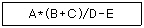
- + E - A B * C D /
- A B * C + D / E -
- + D / * E - A B C
- - / * A + B C D E
(정답률: 64%)
14. 데이터베이스의 상태를 변화시키기 위하여 논리적 기능을 수행하는 하나의 작업 단위를 무엇이라고 하는가?
- 프로시저
- 트랜잭션
- 모듈
- 도메인
(정답률: 74%)
15. 데이터베이스 설계에 대한 설명으로 옳지 않은 것은?
- 요구 조건 분석 단계는 사용자의 요구 조건을 수집하고 분석하여 사용자가 의도하는 데이터베이스의 용도를 파악해야 한다.
- 개념적 설계 단계에서는 트랜잭션 인터페이스 설계, 스키마의 평가 및 정제 등의 작업을 수행한다.
- 논리적 설계 단계에서는 개념적 설계 단계에서 만들어진 정보 구조로부터 특정 목표 DBMS가 처리할 수 있는 스키마를 생성한다.
- 물리적 설계 단계에서는 저장 구조와 접근 경로 등을 결정한다.
(정답률: 62%)
16. 다음 영문의 ( ) 안 내용으로 가장 적절한 것은?
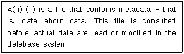
- view
- index
- ISAM file
- data dictionary
(정답률: 65%)
17. 다음 자료에 대하여 선택(Selection) 정렬을 이용하여 오름차순으로 정렬할 경우 2회전 후의 결과로 옳은 것은?
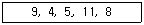
- 4, 5, 8, 9, 11
- 4, 9, 5, 11, 8
- 4, 5, 11, 8, 9
- 4, 5, 9, 11, 8
(정답률: 73%)
18. 트랜잭션은 자기의 연산에 대하여 전부(All) 또는 전무(Nothing) 실행만이 존재하며, 일분 실행으로는 트랜잭션의 기능을 가질 수 없다는 트랜잭션의 특성은?
- consistency
- atomicity
- isolation
- durability
(정답률: 64%)
19. 자료와 부가적인 정보를 조작하고 저장하는 방법이 파일구조이다. 파일을 조작할 때 색인 또는 오버플로우를 위한 공간이 필요하고, 파일을 사용하던 중에 오버플로우 레코드가 많아지면 재편성해야 하는 것은?
- 직접파일(Direct File)
- 다중 링 파일(Multi-Ring File)
- 순차 파일(Sequence File)
- 색인 순차 파일(Indexed Sequential File)
(정답률: 69%)
20. 데이터 모델에 대한 다음 설명 중 ( )의 내용으로 가장 타당한 것은?
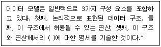
- 제약조건
- 개체
- 속성
- 도메인
(정답률: 72%)
2과목: 전자 계산기 구조
21. 다음 명령어의 실행에 필요한 메모리 참조 횟수는? (단, 각 오퍼랜드는 메모리 간접 주소 모드로 지정)
- 2
- 4
- 6
- 8
(정답률: 38%)
22. 동기 고정식 마이크로 오퍼레이션 제어의 특성을 설명한 것이 아닌 것은?
- 제어장치의 구현이 간단하다.
- 중앙처리장치의 시간 이용이 비효율적이다.
- 여러 종류의 마이크로 오퍼레이션의 수행시 CPU사이클 타임이 실제적인 오퍼레이션 시간보다 길다.
- 마이크로 오퍼레이션이 끝나고 다음 오퍼레이션이 수행될 때까지 시간지연이 있게 되어 CPU 처리 속도가 느려진다.
(정답률: 47%)
23. 3-주소 명령어의 설명으로 옳은 것은?
- 결과는 1st operand에 남는다.
- 결과는 2nd operand에 남는다.
- 결과는 3rd operand에 남는다.
- 결과는 임시 구역에 남는다.
(정답률: 59%)
24. 16바이트의 블록 크기와 64블록으로 구성된 캐시에서 바이트 주소 1200이 사상(mapping)되는 블록 번호는?
- 10
- 11
- 12
- 13
(정답률: 42%)
25. 접근 시간(access time)이 빠른 순서부터 나열된 것은?
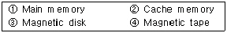
- ①, ②, ③, ④
- ②, ①, ③, ④
- ③, ①, ②, ④
- ③, ②, ①, ④
(정답률: 64%)
26. 기억장치에서 DRO(Destructive Read Out)의 성질을 갖고 있는 메모리는?
- 반도체 메모리
- 자기코어 메모리
- 자기디스크 메모리
- 자기테이프 메모리
(정답률: 50%)
27. 간접사이클(Indirect cycle)을 옳게 나타낸 마이크로오퍼레이션은?(단, MAR : memory address register, MBR : memory buffer register, IEN : interrupt enable)
- MAR←MBR(AD),MBR←M(MAR)
- MAR←PC, MBR←M(MAR), MBR←M(MAR), PC←PC+1, OPR←MBR(OP), I←MBR(I)
- MAR←MBR(AD),MBR←AC,M←MBR
- MAR(AD)←PC, PC←0, MBR←AC, MAR←PC, PC←PC+1, M←MBR, M←MBR, IEN←0
(정답률: 39%)
28. 하드웨어 원인에 의한 인터럽트에 속하지 않는 것은?
- 정전(Power fail)
- machine check
- overflow/underflow
- 프로그램 수행이 무한 루프일 때 time에 의한 발생
(정답률: 47%)
29. 다음 논리회로 중 성격이 다른 것은?
- 디코더
- 반가산기
- 인코더
- 카운터
(정답률: 57%)
30. 2-주소 명령어 형식으로 다음 연산을 표와 같이 수행했을 때 각 ( )에 알맞은 것은? (단, R1, R2은 레지스터를 나타냄)
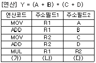
- (가) : MOV, (나) : Y, (다) : R1
- (가) : MOV, (나) : A, (다) : B
- (가) : ADD, (나) : Y, (다) : R1
- (가) : ADD, (나) : A, (다) : B
(정답률: 56%)
31. 하드웨어 신호에 의하여 특정 번지의 서브루틴을 수행하는 것을 무엇이라 하는가?
- DMA
- vectored
- subroutine call
- handshaking mode
(정답률: 48%)
32. 상대 주소 지정방식(Relative Addressing Mode)을 사용하는 컴퓨터에서 PC(Program Counter)의 값이 (2FA50)16 이고 변위(Displacement)값이 (0B)16 이라면 실제 데이터가 들어 있는 메모리의 주소는 얼마인가?
- (2FA500B)16
- (2FA45)16
- (0B2FA50)16
- (2FA5B)16
(정답률: 49%)
33. 기억장치를 각 모듈이 번갈아 가며 접근하는 방법은?
- 페이징
- 스테이징
- 인터리빙
- 세그멘팅
(정답률: 60%)
34. BSA(Branch and Save return Address)의 마이크로 동작 중 시간 T0에서 실행하는 동작이 아닌 것은? (단, T0는 sequencer 출력을 나타냄)
- PC←PC+1
- MAR←MBR(AD)
- MBR(AD)←PC
- PC←MBR(AD)
(정답률: 44%)
35. 기억장치의 자료처리 속도를 나타내는 밴드폭(bandwidth)이란?
- 계속적으로 기억장치에서 데이터를 읽거나 저장할 때 1초 동안에 사용되는 비트 수
- 필요에 따라 주기억장치에 사용되는 바이트의 사용량
- 1초 동안에 사용되는 워드(WORD)의 사용량
- 계속적으로 사용되는 데이터의 사용량을 1분 동안에 사용하는 바이트의 수를 표시
(정답률: 60%)
36. 다음 그림은 입출력 시스템의 구성도이다. ①,②,③,④의 내용을 순서대로 나열한 것은?
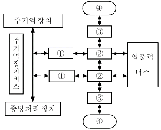
- 입출력 제어기, 입출력 장치제어기, 인터페이스, 입출력 장치
- 입출력 장치제어기, 입출력 제어기, 인터페이스, 입출력 장치
- 입출력 제어기, 인터페이스, 입출력 장치제어기, 입출력장치
- 인터페이스, 입출력 장치제어기, 입출력 제어기, 입출력 장치
(정답률: 49%)
37. 다음은 정규화된 부동소수점(floating point) 방식으로 표현된 두 수의 덧셈과정이다. 다음 중 그 순서가 바르게 나열된 것은? (단, A:정규화, B:지수의 비교, C:가수의 정렬, D:가수의 덧셈)
- B-C-D-A
- C-B-D-A
- A-C-B-D
- A-B-C-D
(정답률: 51%)
38. 인터럽트 처리 루틴에서 반드시 사용되는 레지스터는?
- Index Register
- Accumulator
- Program Counter
- MAR
(정답률: 50%)
39. 다음 프로그램 이행 특성 중 stack을 가장 효과적으로 이용할 수 있는 것은?
- iteration
- recursion
- multiprogramming
- miltiprocessing
(정답률: 44%)
40. 다음 회로에서 OR게이트의 입력으로 연결되어야 할 디코더 출력들로 옳은 것은?
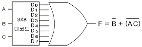
- D1, D4, D5, D6
- D0, D1, D2, D3, D4, D5, D6
- D0, D1, D2, D4, D5, D6
- D4, D5
(정답률: 49%)
3과목: 운영체제
41. 페이징 기법에 대한 설명으로 옳지 않은 것은?
- 동적 주소 변환 기법을 사용하여 다중 프로그래밍의 효과를 증진시킨다.
- 내부 단편화가 발생하지 않는다.
- 프로그램을 동일한 크기로 나눈 단위를 페이지라고 하며, 이 페이지를 블록으로 사용하는 기법이다.
- 페이지 맵 테이블이 필요하다.
(정답률: 63%)
42. 다음 중 가장 바람직한 스케줄링 정책은?
- CPU 이용률을 줄이고 반환시간을 늘린다.
- 응답시간을 줄이고 CPU 이용률을 늘린다.
- 대기시간을 늘리고 반환시간을 줄인다.
- 반환시간과 처리율을 늘린다.
(정답률: 72%)
43. 분산처리 시스템에서 분산의 대상에 대한 설명으로 옳지 않은 것은?
- 공유자원에 접근할 경우 시스템 유지를 위해 제어를 분산할 필요가 있다.
- 처리기와 입출력 장치와 같은 물리적인 자원을 분산할 수 있다.
- 분산처리 시스템에서 분산의 대상이 되는 것은 하드웨어와 제어이며, 자료는 분산 대상이 아니다.
- 시스템 성능과 가용성을 증진하기 위해 자료를 분산할 수 있다.
(정답률: 71%)
44. 운영체제의 기능으로 거리가 먼 것은?
- 통신 네트워크 관리 기능
- 시스템에서의 에러 처리 기능
- 시스템의 바이러스 자동 퇴치 기능
- 병렬 수행을 위한 편의성 제공 기능
(정답률: 73%)
45. 디스크 입출력 요청 대기 큐에 다음과 같은 순서로 기억 되어 있다. 현재 헤드가 53에 있을 때, 이들 모두를 처리하기 위한 총 이동 거리는 얼마인가? (단, FCFS 방식을 사용한다.)
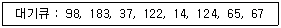
- 320
- 640
- 710
- 763
(정답률: 55%)
46. 분산 처리 시스템의 설계 목적으로 거리가 먼 것은?
- 확장의 용이성
- 보안의 용이성
- 연산속도 향상
- 자원과 데이터의 공유성
(정답률: 74%)
47. 주기억장치 배치 전략 기법으로 First-Fit 방법을 사용할 경우 그림과 같은 기억장소 리스트에서 10k 크기의 작업은 어느 기억공간에 할당 되는가?
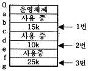
- 1번 부분
- 2번 부분
- 3번 부분
- 할당되지 않는다.
(정답률: 70%)
48. UNIX에서 파일의 사용 허가 지정에 관한 명령어는?
- mv
- ls
- chmod
- fork
(정답률: 69%)
49. UNIX에서 파일에 대한 정보를 갖고 있는 inode 의 내용으로 볼 수 없는 것은?
- 파일 링크 수
- 파일 소유자의 식별 번호
- 파일의 최초 변경시간
- 파일 크기
(정답률: 69%)
50. 시스템 소프트웨어의 하나인 로더(Loader)의 기능에 해당하지 않는 것은?
- Allocation
- Linking
- Translation
- Relocation
(정답률: 52%)
51. 다음 표와 같이 작업이 제출되었을 때 Round-Robin 정책을 사용하여 스케줄링하면 평균 반환시간은 얼마인가? (단, 작업 할당시간은 4시간으로 한다.)
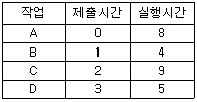
- 19.75
- 19.25
- 18.75
- 18.25
(정답률: 32%)
52. 다음 설명에 해당하는 디렉토리는?
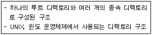
- 1단계 디렉토리
- 비순환 그래프 디렉토리
- 2단계 디렉토리
- 트리 디렉토리
(정답률: 66%)
53. 파일 시스템의 기능이라고 볼 수 없는 것은?
- User Interface 제공
- Backup 과 Recovery 능력
- 정보를 암호화(encryption)하고 해독(decrypt)할 수 있는 능력
- Interrupt에 자동 대처하는 능력
(정답률: 46%)
54. 사용자는 단말 장치를 이용하여 운영체제와 상호 작용하며, 시스템은 일정시간 단위로 CPU를 한 사용자에서 다음 사용자로 신속하게 전환함으로써, 각각의 사용자들은 실제로 자신만이 컴퓨터를 사용하고 있는 것처럼 사용할 수 있는 처리 방식은?
- Batch Processing System
- Time-Sharing Processsing System
- Off-Line Processing System
- Real Time Processing System
(정답률: 65%)
55. 임계영역(Critical Section)에 대한 설명으로 옳은 것은?
- 프로세스들의 상호배제(Mutual Exclusion)가 일어나지 않도록 주의해야 한다.
- 임계영역에서 수행 중인 프로세스는 인터럽트가 가능한 상태로 만들어야 한다.
- 어느 한 시점에서 둘 이상의 프로세스가 동시에 자원 또는 데이터를 사용하도록 지정된 공유 영역을 의미한다.
- 임계 영역에서의 작업은 신속하게 이루어져야 한다.
(정답률: 44%)
56. 다음 설명의 (A)와 (B)에 들어갈 내용으로 옳은 것은?
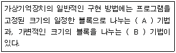
- (A) : Virtual Address, (B) : Paging
- (A) : Paging, (B) : Segmentation
- (A) : Segmentation, (B) : Fragmentation
- (A) : Segmentation, (B) : Compaction
(정답률: 65%)
57. 레코드가 직접 액세스 기억장치의 물리적 주소를 통해 직접 액세스 되는 파일 구조는?
- Sequential File
- Indexed Sequential File
- Direct File
- Partitioned File
(정답률: 71%)
58. PCB(PROCESS CONTROL BLOCK)가 포함하고 있는 정보가 아닌 것은?
- 프로세스의 현 상태
- 중앙처리장치 레지스터 보관 장소
- 할당된 자원에 대한 포인터
- 프로세스의 사용 빈도
(정답률: 43%)
59. UNIX에서 커널에 대한 설명으로 옳지 않은 것은?
- UNIX 시스템의 중심부에 해당한다.
- 사용자의 명령을 수행하는 명령어 해석기이다.
- 프로세스 관리, 기억장치 관리 등을 담당한다.
- 컴퓨터 부팅시 주기억장치에 적재되어 상주하면서 실행된다.
(정답률: 67%)
60. 특정 프로세스의 작업이 중단되어 CPU를 다른 프로세스에게 넘겨줄 때, 전 프로세스의 레지스터들은 저장되고, 실행될 프로세스의 레지스터를 시스템에 적재하는 작업을 무엇이라고 하는가?
- Dispatch
- Wake Up
- Context Switching
- Suspended
(정답률: 54%)
4과목: 소프트웨어 공학
61. 설계품질을 평가하기 위해서는 반드시 좋은 설계에 대한 기준을 세워야 한다. 다음 중 좋은 기준이라고 할 수 없는 것은?
- 설계는 모듈적 이어야 한다.
- 설계는 자료와 프로시저에 대한 분명하고 분리된 표현을 포함해야 한다.
- 소프트웨어 요소들 간의 효과적 제어를 위해 설계에서 계층적 조직이 제시되어야 한다.
- 설계는 서브루틴이나 프로시저가 전체적이고 통합적이 될 수 있도록 유도되어야 한다.
(정답률: 50%)
62. 소프트웨어공학에서 CASE의 효과에 해당하지 않는 것은?
- 소프트웨어 개발 주기의 표준안 확립
- 소프트웨어 개발 기법의 실용화
- 문서화의 용이성 제공
- 시스템 수정 및 유지보수 확대
(정답률: 39%)
63. 소프트웨어공학에 대한 설명으로 거리가 먼 것은?
- 소프트웨어공학이란 소프트웨어의 개발, 운용, 유지보수 및 파기에 대한 체계적인 접근 방법이다.
- 소프트웨어공학은 소프트웨어 제품의 품질을 향상시키고 소프트웨어 생산성과 작업 만족도를 증대시키는 것이 목적이다.
- 소프트웨어공학의 궁극적 목표는 최대의 비용으로 계획된 일정보다 가능한 빠른 시일 내에 소프트웨어를 개발하는 것이다.
- 소프트웨어공학은 신뢰성 있는 소프트웨어를 경제적인 비용으로 획득하기 위해 공학적 원리를 정립하고 이를 이용하는 학문이다.
(정답률: 73%)
64. 다음 중 소프트웨어 개발 모형이 가장 적절하게 선택된 경우는?
- 구축하고자 하는 시스템의 요구사항이 불분명하여 프로토타입 모형을 선택하였다.
- 개발 중에도 고객의 요구사항에 맞게 수정 작업을 할 수 있도록 폭포수 모형을 선택하였다.
- 위험 분석을 통해 점증적으로 시스템을 개발할 수 있도록 폭포수 모형을 선택하였다.
- 응용분야가 단순하고 설치 시점에 제품 설명서가 요구됨에 따라 나선형 모형을 선택하였다.
(정답률: 55%)
65. DFD(Data Flow Diagram)에 대한 설명으로 거리가 먼 것은?
- 단말(Terminator)은 원으로 표기한다.
- 구조적 분석 기법에 이용된다.
- 자료 흐름과 기능을 자세히 표현하기 위해 단계적으로 세분화된다.
- 자료 흐름 그래프 또는 버블(Bubble) 차트라고도 한다.
(정답률: 56%)
66. 제어흐름 그래프가 다음과 같을 때 McCabed의 cyclomatic 수는 얼마인가?
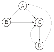
- 3
- 4
- 5
- 6
(정답률: 55%)
67. 객체 지향 설계 단계의 순서가 옳은 것은?
- 문제 정의→요구 명세화→객체 연산자 정의→객체 인터페이스 결정→객체 구현
- 요구 명세화→문제 정의→객체 인터페이스 결정→객체 연산자 정의→객체 구현
- 문제 정의→요구 명세화→객체 구현→객체 인터페이스 결정→객체 연산자 정의
- 요구 명세화→문제 정의→객체 구현→객체 인터페이스 결정→객체 연산자 정의
(정답률: 54%)
68. 객체모형(Object Model), 동적모형(Dynamic Model), 기능 모형(Functional Model)의 3개 모형으로 구성되어 있는 객체지향 분석 기법은?
- Rumbaugh method
- Wirfs-Brock method
- Jacobson method
- Coad & Yourdon method
(정답률: 68%)
69. 프로젝트를 추진하기 위하여 팀 구성원들의 특성을 분석해보니 1명이 고급 프로그래머이고 몇 명의 중급 프로그래머가 포함되어 있었다. 이와 같은 경우 가장 적합한 팀 구성 방식은?
- 책임 프로그래머 팀(Chief Programmer Team)
- 민주주의식 팀(Democratic Team)
- 계층형 팀(Hierarchical Team)
- 구조적 팀(Structured Team)
(정답률: 67%)
70. 자료 사전에서 자료의 반복을 의미하는 것은?
- =
- ( )
- { }
- [ ]
(정답률: 66%)
71. 유지보수의 종류 중 다음 설명에 해당하는 것은?
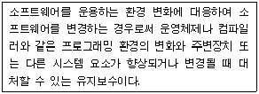
- Preventive maintenance
- Corrective maintenance
- Perfective maintenance
- Adaptive maintenance
(정답률: 58%)
72. 객체 지향 기법에서 어떤 클래스에 속하는 구체적인 객체를 의미하는 것은?
- instance
- message
- method
- operation
(정답률: 48%)
73. 소프트웨어 품질목표 중 사용자의 요구 기능을 충족시키는 정도를 의미하는 것은?
- Usability
- Flexibility
- Correctness
- Maintainability
(정답률: 40%)
74. 응집도는 한 모듈 내부의 처리 요소들 간의 기능적 연관도를 나타낸다. 다음 중 가장 강한 응집도에 해당하는 것은?
- Procedural Cohesion
- Functional Cohesion
- Sequential Cohesion
- Logical Cohesion
(정답률: 49%)
75. 소프트웨어 프로젝트 관리를 효과적으로 수행하는데 필요한 3P에 해당하지 않는 것은?
- Procedure
- People
- Problem
- Process
(정답률: 69%)
76. 소프트웨어를 재사용함으로써 얻을 수 있는 이점으로 거리가 먼 것은?
- 새로운 개발 방법론 도입용이
- 생산성 증가
- 소프트웨어 품질 향상
- 소프트웨어 문서 공유
(정답률: 67%)
77. 두 명의 개발자가 5개월에 걸쳐 10000 라인의 코드를 개발하였을 때, 월별(person-month) 생산성 특정을 위한 계산 방식으로 가장 적합한 것은?
- 10000 / 2
- 10000 / 5
- 10000 / (5 × 2)
- (2 × 10000) / 5
(정답률: 70%)
78. 화이트박스 테스트에 대한 설명으로 옳지 않은 것은?
- 제품의 내부 요소들이 명세서에 따라 수행되고 충분히 실행되는가를 보장하기 위한 검사이다.
- 모듈 안의 작동을 직접 관찰한다.
- 프로그램 원시 코드의 논리적인 구조를 커버하도록 테스트 케이스를 설계한다.
- 화이트박스 테스트 기법에는 조건 검사, 루프 검사, 비교 검사 등이 있다.
(정답률: 42%)
79. CPM(Critical Path Method)에 대한 설명으로 옳지 않은 것은?
- 프로젝트 내에서 각 작업이 수행되는 시간과 각 작업 사이의 관계를 파악할 수 있다.
- 작업일정을 한눈에 볼 수 있도록 해주며 막대그래프의 형태로 표현한다.
- 경영층의 과학적인 의사 결정을 지원한다.
- 효과적인 프로젝트의 통제를 가능하게 해 준다.
(정답률: 50%)
80. 재공학의 목적으로 적합하지 않은 것은?
- 소프트웨어의 수명을 연장시킨다.
- 소프트웨어의 유지보수성을 향상시킨다.
- 소프트웨어 개발 기간을 연장시켜 비용을 증가시킨다.
- 소프트웨어에서 사용하고 있는 기술을 향상시킨다.
(정답률: 72%)
5과목: 데이터 통신
81. 다음 설명에 해당하는 통신망은?
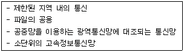
- 종합정보통신망(ISDN)
- 부가가치통신망(VAN)
- 근거리통신망(LAN)
- 가입전산망(Teletex)
(정답률: 73%)
82. 가상회선 패킷교환 방식에서 모든 패킷이 전송되면, 마지막으로 이미 확립된 접속을 끝내기 위해 이용되는 패킷으로 옳은 것은?
- Call Accept Packet
- Clear Request Packet
- Call Identifier Packet
- Reset Packet
(정답률: 64%)
83. 다음 중 PCM 방식의 변조 순서로 옳은 것은?
- 양자화→표본화→부호화
- 표본화→양자화→부호화
- 부호화→표본화→양자화
- 표본화→부호화→양자화
(정답률: 66%)
84. 다음 중 프로토콜의 기본 요소가 아닌 것은?
- syntax
- timing
- control
- semantic
(정답률: 45%)
85. 다음이 설명하고 있는 것은?
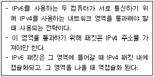
- Header Translation
- Tunneling
- Packet Handling
- Dual Stack
(정답률: 56%)
86. 이동 단말이나 PDA, 소형 무선 단말기 상에서 인터넷을 이용할 수 있도록 해주는 프로토콜의 총칭은?
- ASP
- WAP
- HTTP
- PPP
(정답률: 64%)
87. 데이터 링크 제어 문자 중에서 수신측에서 송신측으로 부정 응답으로 보내는 문자는?
- NAK(Negative Acknowledge)
- STX(Start of Text)
- ACK(Acknowledge)
- ENQ(Enquiry)
(정답률: 71%)
88. 아날로그 데이터 전송 방식 중에서 비트 전송률을 높이기 위해 각각의 벡터를 위상 변화뿐만 아니라 진폭 변화도 시키는 방식은?
- PSK(Phase Shift Keying)
- QAM(Quardrature Amplitude Modulation)
- FSK(Frequency Shift Keying)
- ASK(Amplitude Shift Keying)
(정답률: 54%)
89. TCP/IP 모델 중 전송계층 프로토콜로 순서제어와 에러제어를 수행하는 것은?
- IP
- TCP
- UDP
- FTP
(정답률: 55%)
90. HDLC(High-Level Data Link Control)에서 사용되는 프레임의 종류로 옳지 않은 것은?
- Information Frame
- Supervisory Frame
- Control Frame
- Unnumbered Frame
(정답률: 46%)
91. 효율적인 전송을 위하여 넓은 대역폭(혹은 고속 전송 속도)을 가진 하나의 전송링크를 통하여 여러 신호(혹은 데이터)를 동시에 실어 보내는 기술은?
- 집중화
- 다중화
- 부호화
- 변조화
(정답률: 67%)
92. OSI 7계층 중 데이터링크 계층의 기능이 아닌 것은?
- 순서제어
- 흐름제어
- 서비스의 선택
- 에러검출 및 정정
(정답률: 58%)
93. 다음 중 TCP 헤더에 포함되는 정보가 아닌 것은?
- 긴급 포인터
- 호스트 주소
- 순서 번호
- 체크섬
(정답률: 38%)
94. 데이터 전송제어절차 5단계 동작 과정을 순서대로 나열한 것은?
- 통신회선 접속→데이터링크 설정→데이터 전송→데이터링크 종결→통신회선 절단
- 데이터링크 설정→통신회선 접속→데이터 전송→데이터링크 종결→통신회선 절단
- 통신회선 접속→데이터링크 설정→데이터 전송→통신회선 절단→ 데이터링크 종결
- 데이터링크 설정→통신회선 접속→데이터 전송→통신회선 절단→데이터링크 종결
(정답률: 65%)
95. TCP/IP에서 사용되는 논리주소를 물리주소로 변환시켜주는 프로토콜은?
- TCP
- ARP
- RARP
- IP
(정답률: 54%)
96. 시분할 다중화(TDM : time division multiplexing)의 설명 중 틀린 것은?
- 시분할 다중화에는 동기식 시분할 다중화와 통계적 시분할 다중화 방식이 있다.
- 동기식 시분할 다중화 방식은 전송 프레임마다 각 시간 슬롯이 해당 채널에게 고정적으로 할당된다.
- 통계적 시분할 다중화 방식은 전송할 데이터가 있는 채널만 차례로 시간슬롯을 이용하여 전송한다.
- 통계적 시분할 다중화 보다 동기식 시분할 다중화 방식이 전송 대역폭을 더욱더 효율적으로 사용할 수 있다.
(정답률: 55%)
97. 에러 제어에 사용되는 자동반복 요청(ARQ) 기법이 아닌 것은?
- stop-and-wait ARQ
- go-back-N ARQ
- auto-repeat ARQ
- selective-repeat ARQ
(정답률: 56%)
98. 패킷교환 방식 중 가상회선 패킷교환에 대한 설명으로 옳지 않은 것은?
- 패킷이 전송되기 전에 논리적인 연결설정이 이루어져야 한다.
- 모든 패킷이 동일한 경로로 전달되므로 항상 보내어진 순서대로 도착이 보장된다.
- 링크 상에 설정된 하나의 가상회선 단위로 패킷의 손상시 복구가 가능하다.
- 연결 설정시에 경로가 미리 결정되기 때문에 각 노드에서 데이터 패킷의 처리 속도가 매우 느리다.
(정답률: 48%)
99. 다음이 설명하고 있는 프로토콜은?
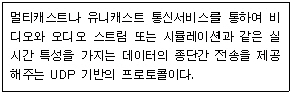
- IP
- TCP
- RTP
- FTP
(정답률: 43%)
100. OSI-7계층 중 프로세스간의 대화 제어(dialogue control) 및 동기점(sysnchronization point)을 이용한 효율적인 데이터 복구를 제공하는 계층은?
- Data Link layer
- Network layer
- Transport layer
- Session layer
(정답률: 49%)
스택은 후입선출(LIFO) 구조이기 때문에, 가장 마지막에 입력된 D가 가장 먼저 출력되어야 한다. 따라서 D는 모든 가능한 출력 순서에서 가장 먼저 출력되어야 한다.
"A, B, C, D" 순서에서는 D가 가장 먼저 출력되고, 나머지 요소들도 가능한 순서대로 출력될 수 있다.
"C, D, B, A" 순서에서는 D가 가장 먼저 출력되고, 그 다음에는 C가 출력되어야 한다. 하지만 C 다음에 B가 출력되면 A는 출력될 수 없기 때문에 이 순서는 가능한 출력 순서가 아니다.
"B, C, D, A" 순서에서는 D가 가장 먼저 출력되고, 나머지 요소들도 가능한 순서대로 출력될 수 있다.
"C, A, B, D" 순서에서는 D가 가장 먼저 출력되고, 그 다음에는 C가 출력되어야 한다. 그리고 A가 출력되고, 마지막으로 B가 출력되면 가능한 출력 순서가 된다.